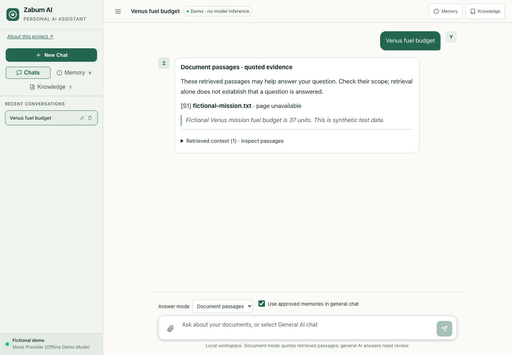

ZABUM AI / LOCAL DOCUMENT WORKSPACE
Ask questions.
Inspect the evidence.
A local workspace for documents, OCR, chat, and approved memories. Inspect the passage behind a citation before deciding whether it supports an answer.

A clear boundary around each response
Document mode quotes retrieved passages and abstains when the conservative lexical gate finds no support. General chat uses the configured local model and is explicitly labeled as unverified against documents.
Documents stay on your device
Python, Flask, SQLite FTS5, Ollama, and optional Transformers/PyTorch OCR. The working API binds to localhost and rejects foreign origins. This static showcase does not upload files or contact an AI API.
Memory is a choice
Suggested memories require approval. Review, edit, delete, or disable approved memories. Disabling memory retains your saved records while excluding them from general chat.
What the evaluation does—and does not—show
The repository includes a small, reproducible synthetic passage-retrieval evaluation. Its results describe known fixture passages and abstention decisions, not general answer accuracy, OCR quality, or real-world adoption. The lexical gate can miss paraphrases and cannot establish semantic entailment.